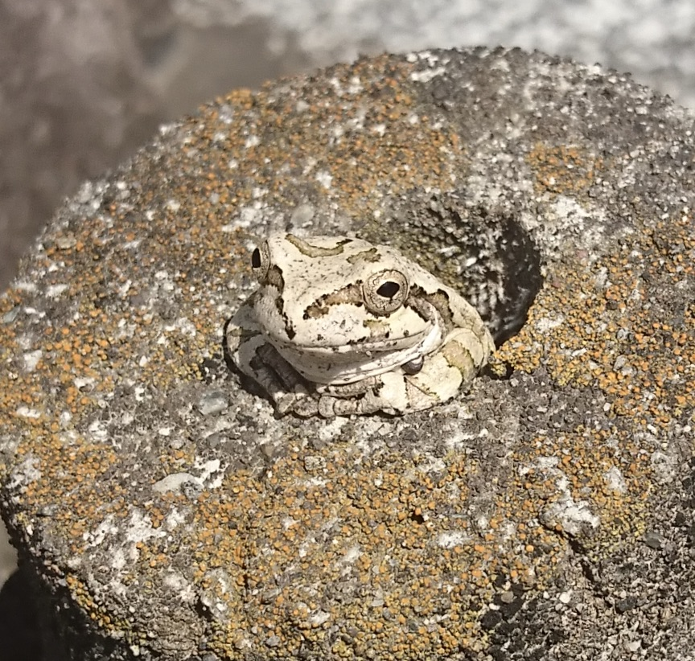

プロフィール

- 名前：犬飼 顕智
- 出身：山梨県
- 実家はお寺。大学で僧侶の資格を取得し、卒業後に修行として一年間港区芝公園の増上寺で研修生として随身した後、 紹介にて世田谷区のお寺に努めておりましたが、自分のお寺には限界を感じており決心し、興味のあったIT業界にチャレンジしました。
スキル
html css
様々なコードを試し、いくつかのクローンサイトを製作。Bootstrapを使ったコーディングも経験済み。
javascript
基本的な読み書きが可能。jQueryでのコーディングも経験済み
Ruby
railsにてお寺の管理者用檀家管理アプリを作成。
製作物

- danka_web ここにリンクを貼る
- お寺の住職が檀家さんを管理するwebアプリです。
-
檀家さんの一覧をパソコン、またはスマートフォンで管理をすることができます。
-
また手作業だった檀家さんへの法事案内も作成でき、打ち間違いなどの間違いを防ぐとともに素早い発送できます。